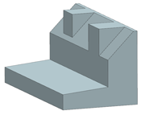
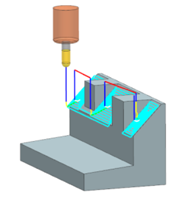
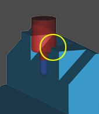
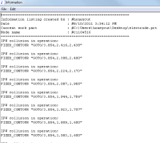

Verify the existing tool path
-
Openmnf16_85_tilt_tool_axis.

-
In the Operation Navigator, right-click FIXED_CONTOUR and choose Tool Path→Verify.

-
In the Tool Path Visualization dialog box, click the 2D Dynamic tab.
Make sure that the Check for IPW Collisions
 and Check Tool and Holder check boxes are selected.
and Check Tool and Holder check boxes are selected.
-
Click Step twice to start dynamic material removal.
NX will prompt you for blank information.
Note
You will not be able to dynamically rotate the part geometry while in the 2D Dynamic visualization mode.
-
In the No Blank message box, click OK.
You will now specify a blank to verify the path.
-
In the Blank Geometry dialog box, in the Type group, from the list, select Offset from Part.
-
In the Offset group, in the Offset input box, type .000.
-
Click OK.
-
Move the Animation Speed slider to 1.
-
Click Step numerous times until you encounter the collision shown.

Notice the tool holder and part collision at the top of the square feature of the part.
-
Click Play
 for the remainder of the tool path to finish its movement.
for the remainder of the tool path to finish its movement.
-
Click List.
In the Information window, NX lists the location of every collision in the tool path. Review some of the coordinates.

Notice that the Status line says 169 collisions found.
-
Close the Information window.
-
In the Tool Path Visualization dialog box, click OK.